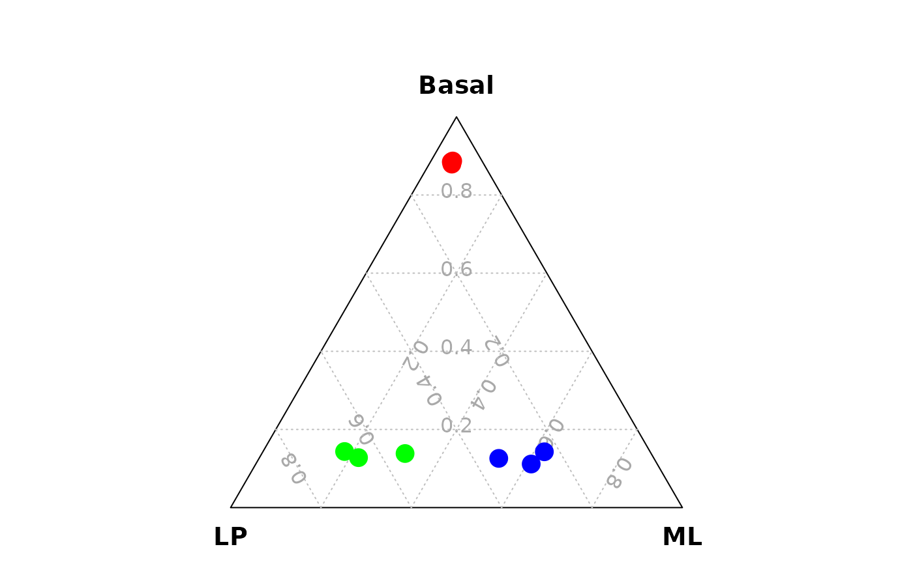

generate_data_for_ternary.RdGenerate a three column matrix which can be used to draw a ternary plot.
generate_data_for_ternary(
data_exp_mat = NULL,
anno_signature_genes = NULL,
gene_name_col = "GeneID",
gene_type_col = "gene_type",
weight_by_gene_count = TRUE,
print_gene_num = FALSE,
cutoff_exp = 0,
prior_count = 2
)An expression matrix, e.g., raw count matrix or log2CPM matrix
A data.frame containing signature gene annotation
Colname name of row (gene) names used in the expression matrix
Colname name of signature gene type annotation
Whether to divide the signature gene number by the total signature gene name, default is TRUE
Print the signature gene number or not
Expression cut-offs used to count the signature gene number
Add a prior count to avoid signature gene number to be 0, default is 2 but can be set to a different one
library(scTernary)
# Generate data for ternary plots
# using a CPM matrix and a CPM cut-off of 100
data_for_ternary = generate_data_for_ternary(
data_exp_mat = edgeR::cpm(example_dge_data$counts,
log = FALSE),
anno_signature_genes = anno_signature_genes_mouse,
gene_name_col = "GeneID",
gene_type_col = "gene_type",
weight_by_gene_count = FALSE,
cutoff_exp = 100,
prior_count = 0
)
vcdTernaryPlot(data = data_for_ternary,
order_colnames = c(2,3,1),
group = example_dge_data$samples$group,
group_color = c("red","green","blue"),
point_size = 1,
legend_point_size = 0.6,
legend_position = c(0.3,0.5),
scale_legend = 1)
